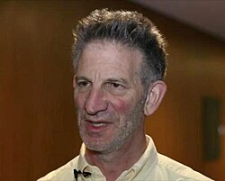

Peter Sarnak | |
|---|---|
 | |
| Born | Peter Clive Sarnak 18 December 1953 Johannesburg, South Africa |
| Citizenship | South Africa[1] United States[1] |
| Alma mater | University of the Witwatersrand (BSc) Stanford University (PhD) |
| Known for | Systolic geometry Hafner–Sarnak–McCurley constant Spectral gap conjecture |
| Awards | George Pólya Prize (1998) Ostrowski Prize (2001) Levi L. Conant Prize (2003) Cole Prize (2005) Wolf Prize (2014) Sylvester Medal (2019) Shaw Prize (2024) |
| Scientific career | |
| Fields | Mathematics |
| Institutions | Courant Institute New York University Stanford University Princeton University Institute for Advanced Study |
| Thesis | Prime geodesic theorems (1980) |
| Paul Cohen[1][2] | |
Doctoral students | |
| Website | www |
.jpg){kind=link}
Peter Clive Sarnak FRS MAE[3] (born 18 December 1953) is a South African and American mathematician.[1] Sarnak has been a member of the permanent faculty of the School of Mathematics at the Institute for Advanced Study since 2007.[4] He has also been Eugene Higgins Professor of Mathematics at Princeton University since 2002, succeeding Sir Andrew Wiles, and is an editor of the Annals of Mathematics. He is known for his work in analytic number theory.[4] He was member of the Board of Adjudicators and for one period chairman of the selection committee for the Mathematics award, given under the auspices of the Shaw Prize.
Education
Sarnak is the grandson of one of Johannesburg's rabbis and lived in Israel for three years as a child. He graduated from the University of the Witwatersrand (BSc 1975, BSc(Hons) 1976) and Stanford University (PhD 1980), under the direction of Paul Cohen.[1][2] Sarnak's work (with A. Lubotzky and R. Phillips) applied results in number theory to Ramanujan graphs, with connections to combinatorics and computer science.
Career and research
Sarnak has made contributions to analysis and number theory.[3] He is recognised as one of the leading analytic number theorists of his generation.[3] His early work on the existence of cusp forms led to the disproof of a conjecture of Atle Selberg.[3] He has obtained the strongest known bounds towards the Ramanujan–Petersson conjectures for sparse graphs, and was one of the first to exploit connections between certain questions of theoretical physics and analytic number theory.[3]
There are fundamental contributions to arithmetical quantum chaos, a term which he introduced, and to the relationship between random matrix theory and the zeros of L-functions.[3] His work on subconvexity for Rankin–Selberg L-functions led to the resolution of Hilbert's eleventh problem.[3]
During his career he has held numerous appointments including:
- Assistant Professor, 1980–83; Associate Professor, 1983; Professor, 2001–2005, Courant Institute, New York University
- Associate Professor, 1984–87; Professor, 1987–91, Stanford University
- Professor, 1991–; H. Fine Professor, 1995–96; Chairman, Dept of Mathematics, 1996–99; Eugene Higgins Professor, 2002–, Princeton University
- Member, 1999–2002 and 2005–2007; Faculty, 2007–present, Institute for Advanced Study
Publications
- Sarnak, P. (1982). "Spectral Behavior of Quasi Periodic Potentials". Commun. Math. Phys. 84 (3): 377–401. Bibcode:1982CMaPh..84..377S. doi:10.1007/bf01208483. S2CID 123319103.
- Some Applications of Modular Forms, 1990
- (joint editor) Extremal Riemann Surfaces, 1997
- (joint author) Random Matrices, Frobenius Eigenvalues and Monodromy, 1998
- Peter Sarnak (2000). "Some problems in Number Theory, Analysis and Mathematical Physics". In V. I. Arnold; M. Atiyah; P. Lax; B. Mazur (eds.). Mathematics: frontiers and perspectives. American Mathematical Society. pp. 261–269. ISBN 978-0-8218-2697-3.
- (joint editor) Selected Works of Ilya Piatetski-Shapiro (Collected Works), 2000
- (joint author) Elementary Number Theory, Group Theory and Ramanujan Graphs, 2003
- (joint editor) Selected Papers Volume I-Peter Lax, 2005
- (joint editor) Automorphic Forms and Applications, 2007
Awards and honours
Peter Sarnak was awarded:
- 1988 Pólya Prize of the Society for Industrial & Applied Mathematics
- 2001 Ostrowski Prize
- 2003 Levi L. Conant Prize
- 2005 Frank Nelson Cole Prize in Number Theory
- 2012 Lester R. Ford Award[5]
- 2014 Wolf Prize in Mathematics[6]
- 2019 Sylvester Medal of the Royal Society[7]
- 2024 Shaw Prize.[8]
The University of the Witwatersrand conferred an honorary doctorate on Professor Peter Sarnak on 2 July 2014 for his distinguished contribution to the field of mathematics.
He was an invited speaker at the International Congress of Mathematicians (ICM) in 1990 in Kyoto[9] and a plenary speaker at the ICM in 1998 in Berlin.[10]
Sarnak has been a member of the American Academy of Arts and Sciences since 1991. He was also elected as member of the National Academy of Sciences (USA) and Fellow of the Royal Society (FRS) in 2002.[3] He became a member of the American Philosophical Society in 2008.[11] He was awarded an honorary doctorate by the Hebrew University of Jerusalem in 2010.[12] He was also awarded an honorary doctorate by the University of Chicago in 2015 and by Stockholm University in 2023.[13][14] He was elected to the 2018 class of fellows of the American Mathematical Society.[15] In 2019 he became the 10th non-British citizen to ever be awarded the Sylvester Medal of the Royal Society.[7]
References
- ^ a b c d e Sarnak, Peter. "CV February 2012" (PDF).
- ^ a b Peter Sarnak at the Mathematics Genealogy Project
- ^ a b c d e f g h https://royalsociety.org/people/peter-sarnak-12230/ One or more of the preceding sentences incorporates text from the royalsociety.org website where:
"All text published under the heading 'Biography' on Fellow profile pages is available under Creative Commons Attribution 4.0 International License." --Royal Society Terms, conditions and policies at the Wayback Machine (archived 2016-11-11)
- ^ a b "Faculty: School of Mathematics". Institute for Advanced Study. 2008. Retrieved 31 May 2009.
- ^ Sarnak, Peter (2011). "Integral Apollonian Packings". Amer. Math. Monthly. 118 (4): 291–306. doi:10.4169/amer.math.monthly.118.04.291. S2CID 590695. Archived from the original on 29 May 2024. Retrieved 27 January 2015.
- ^ "פרופ' פיטר סרנק". Wolffund.org.il. 13 February 2015. Retrieved 22 July 2015.
- ^ a b Sylvester Medal 2019
- ^ Shaw Prize 2024
- ^ Sarnak, Peter (1990). "Diophantine problems and linear groups". Proceedings of the International Congress of Mathematicians, 1990, Kyoto. Vol. 1. pp. 459–471.
- ^ Sarnak, Peter (1998). "-functions" (PDF). Documenta Mathematica Journal der Deutshen Mathematiker-Vereinigung Extra Vol. ICM Berlin, 1998, vol. I. pp. 453–465.
- ^ "APS Member History". search.amphilsoc.org. Retrieved 28 April 2021.
- ^ [1] Archived 19 July 2011 at the Wayback Machine
- ^ "University to bestow four honorary degrees at 523rd Convocation | UChicago News". News.uchicago.edu. 20 May 2015. Retrieved 22 July 2015.
- ^ Hallman, Annika (18 April 2023). "Ten new Honorary Doctorates at Stockholm University - Stockholm University". www.su.se. Retrieved 22 September 2023.
- ^ 2018 Class of the Fellows of the AMS, American Mathematical Society, retrieved 3 November 2017
 This article incorporates text available under the CC BY 4.0 license.
This article incorporates text available under the CC BY 4.0 license.